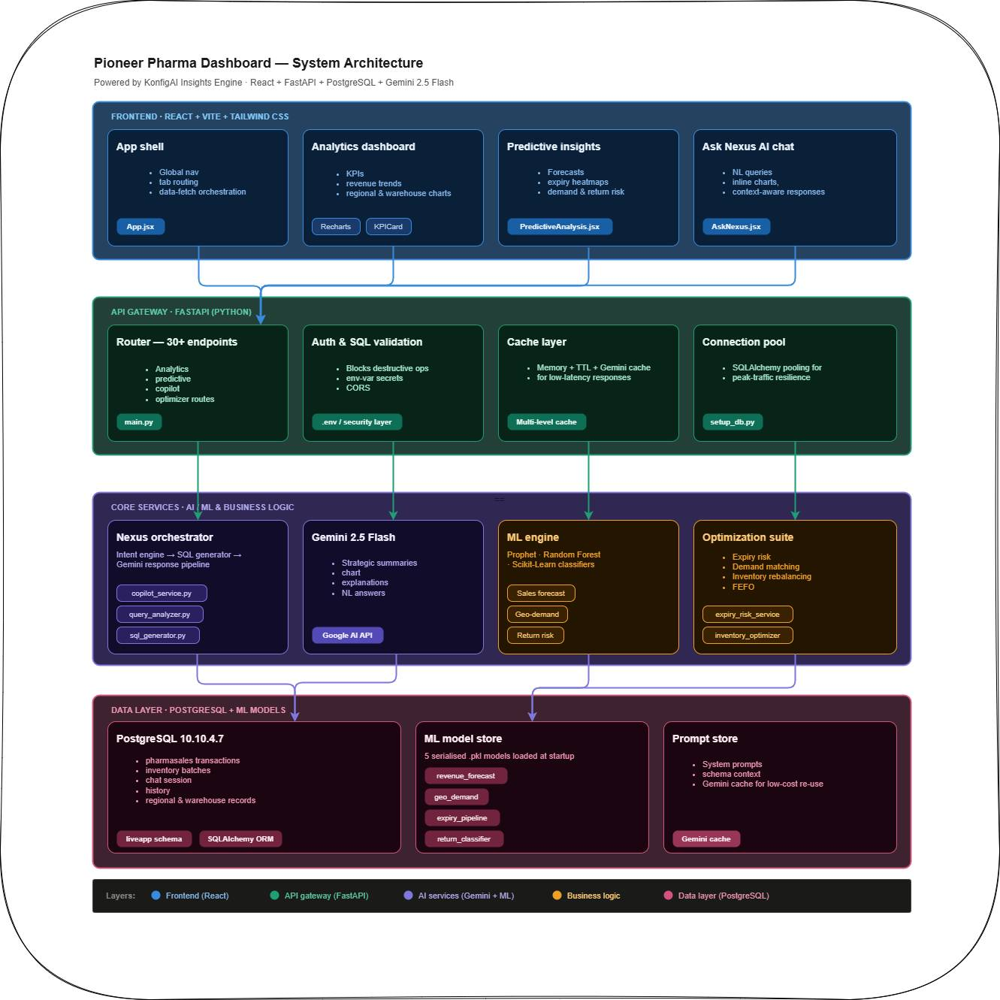
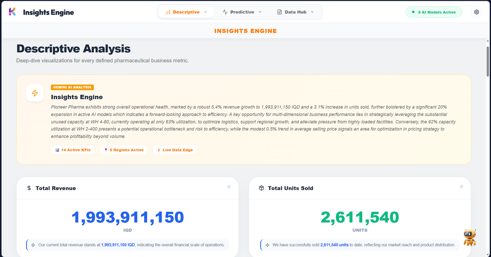
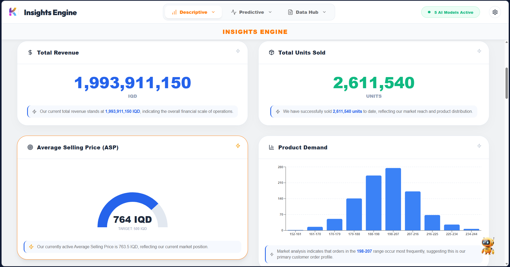
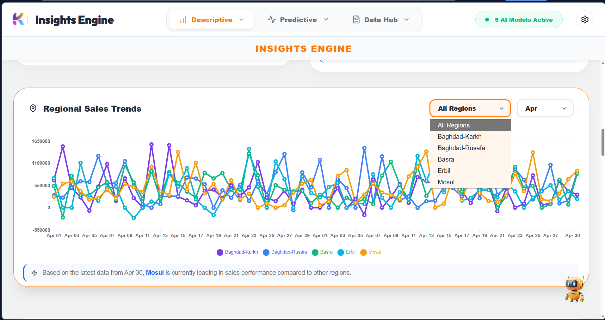
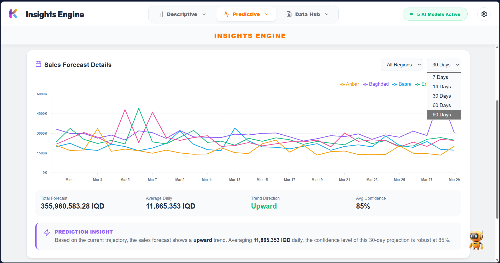
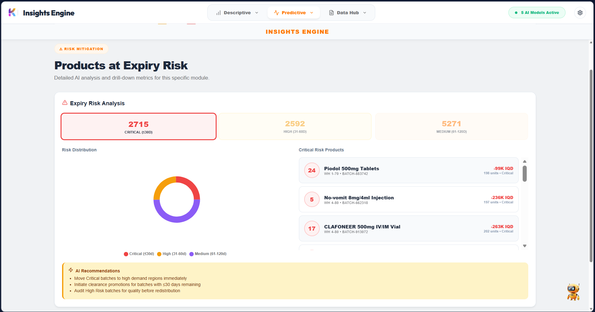
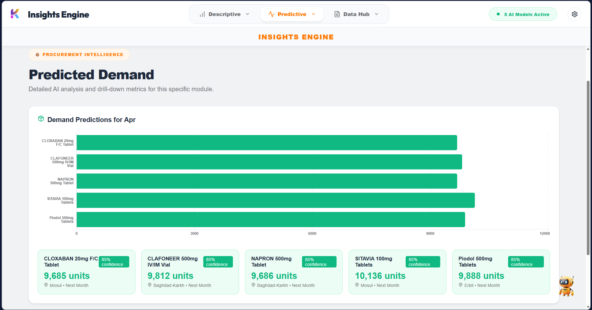
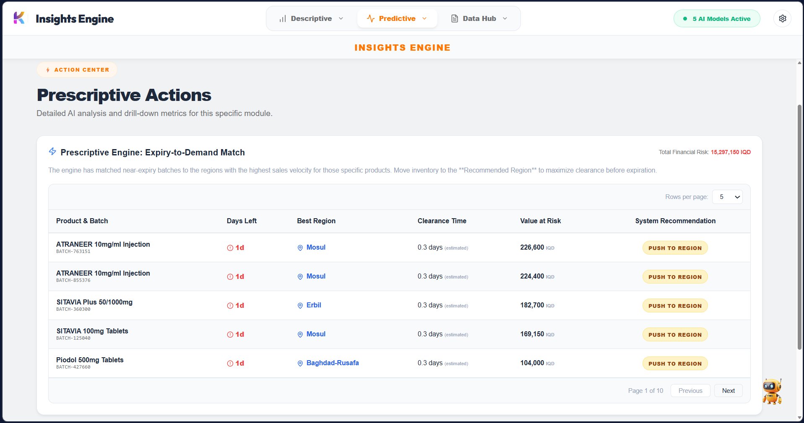
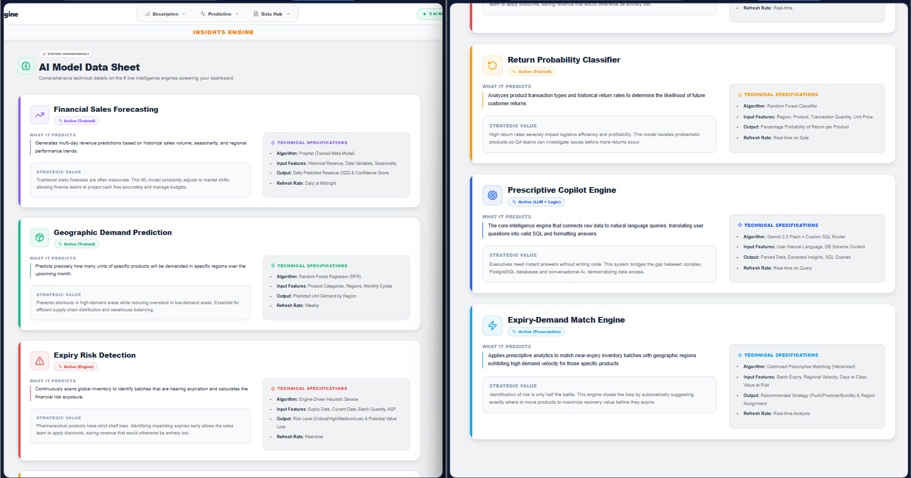

Project Overview
Pioneer Pharma Insights Engine is an enterprise-grade pharmaceutical analytics and AI intelligence platform designed to transform large-scale pharmaceutical operational data into actionable strategic insights using predictive machine learning, generative AI, and intelligent supply-chain optimization.
Core Objectives
- Provide real-time operational visibility
- Forecast future business trends
- Optimize inventory movement
- Democratize analytics through AI copilots
Problem Solved
- Inventory wastage & expiry risks
- Inaccurate regional forecasting
- Inefficient warehouse balancing
- Inaccessible data for non-technical users
System Architecture
The platform follows a modern enterprise AI architecture consisting of multiple interconnected layers, from a React-based frontend to a FastAPI orchestration backend and a robust ML layer.

Enterprise AI orchestration architecture showing frontend, backend, ML pipelines, Gemini AI integration, and PostgreSQL intelligence layers.
Frontend Layer
Built with React.js, Vite, and Tailwind CSS. Features interactive dashboards using Recharts and smooth animations with Framer Motion.
Backend Layer
Powered by FastAPI and PostgreSQL. Handles API orchestration, ML model execution, and asynchronous recommendation engines.
Descriptive Analytics Dashboard
The operational intelligence layer provides a comprehensive real-time overview of historical pharmaceutical operations and business performance.
Key Intelligence Features
- KPI Intelligence Cards: Live tracking of Revenue, Units Sold, and Average Selling Price.
- Regional Sales Intelligence: Geographic distribution across Baghdad, Basra, Erbil, and Mosul.
- Warehouse Monitoring: Capacity utilization and transaction intensity tracking across depots.
- Product Contribution: Identification of highest-performing pharmaceutical products.



Predictive Intelligence Hub
This layer transforms historical data into future operational forecasts, enabling proactive decision-making instead of reactive reporting.
Utilizes Facebook Prophet to predict future revenue trends (7, 30, and 90-day intervals) based on seasonality and regional demand behavior.

Continuously scans inventory to identify near-expiry products, classifying them into Critical, High, and Medium risk categories to minimize financial exposure.

A Random Forest Regressor predicts future unit demand by region, enabling intelligent warehouse allocation and supply chain balancing.

The prescriptive intelligence layer. It recommends moving specific stock between warehouses (e.g., move 500 units from Baghdad to Basra) based on predicted demand and expiry urgency.

AI Model Datasheet & Explainability
Transparency is key to enterprise AI. This module provides deep insights into the machine learning systems powering the platform.
| Model Type | Algorithm | Core Responsibility |
|---|---|---|
| Sales Forecasting | Facebook Prophet | Revenue & Trend Prediction |
| Demand Forecasting | Random Forest Regressor | Regional Unit Allocation |
| Return Probability | Random Forest Classifier | Logistics Risk Mitigation |
| Expiry Risk | ML Pipeline System | Inventory Health Tracking |

Ask Nexus — AI Copilot
Ask Nexus is a conversational AI system that enables users to interact with pharmaceutical data using natural language, combining Gemini reasoning with dynamic SQL generation.
validate_sql_safe()) to block destructive queries, ensuring enterprise-grade safety.
Copilot Capabilities
- Natural Language Analytics: Ask questions like "Which regions had the highest return rate?"
- Inline Visualizations: Automatically renders bar, pie, and area charts inside the chat.
- Context Awareness: Aware of active filters and dashboard pages for hyper-contextual insights.
- Multi-Language Support: Supports both English (LTR) and Arabic (RTL).
Engineering Performance Metrics
Quantifiable performance data demonstrating the system's readiness for enterprise-scale pharmaceutical operations.
Business Impact
The platform transforms pharmaceutical operations from manual tracking to an automated, AI-driven intelligence ecosystem.
- Real-time Sales Forecasting & Trend Detection
- Critical Expiry-Risk Monitoring & Loss Prevention
- Geographic Demand Prediction for Logistics Optimization
- Intelligent Inventory Redistribution Recommendations
The Ask Nexus Copilot enabled non-technical stakeholders to query complex enterprise data using natural language, effectively democratizing data science within the organization and reducing dependency on technical teams for routine reporting.
My Contributions
As the lead engineer, I owned the full lifecycle of the platform's intelligence and backend layers.
Backend & AI Orchestration
- Architected the FastAPI backend and SQLAlchemy ORM layer
- Implemented the Gemini-powered SQL generation pipeline
- Designed the secure
validate_sql_safe()validation layer
ML & Data Engineering
- Developed Prophet sales forecasting & Random Forest pipelines
- Built the custom Expiry-Demand matching engine
- Engineered ML-ready feature pipelines for inventory health
Engineering Challenges Solved
Overcoming complex technical hurdles to deliver a production-grade AI system.
1. Secure AI-Generated SQL Validation
Challenge: Allowing an LLM to query a live database poses significant security risks (injection, deletion).
Solution: Implemented a multi-stage validation layer that parsed generated SQL against a strict whitelist of safe operations and schema-specific metadata.
2. Real-Time Chart Rendering inside AI Chat
Challenge: Dynamically converting structured query results into interactive React components within a streaming chat interface.
Solution: Developed a protocol where the AI returns JSON-structured data alongside its text response, which the frontend interceptor renders as live Recharts components.
3. Warehouse-Demand Balancing Logic
Challenge: Creating a prescriptive engine that balances expiry urgency with regional demand across multiple silos.
Solution: Built a custom optimization algorithm that scores redistribution opportunities based on unit loss-risk and predicted regional fulfillment needs.
Technical Highlights
Project Walkthrough Videos
Comprehensive video demonstrations covering every major module of the Pioneer Pharma Insights Engine platform.
Descriptive Dashboards
A tour of the live KPI tracking, regional sales intelligence, and warehouse monitoring systems.
Predictive Hub
Demonstrating sales forecasting, expiry risk detection, and regional demand prediction.
Ask Nexus AI
Interacting with the conversational AI copilot for natural language data querying and SQL generation.
Model Datasheet
Explaining the machine learning algorithms, data sources, and model explainability metrics.
Code & Deployment
The complete source code for Pioneer Pharma Insights Engine is open-source and available on GitHub.